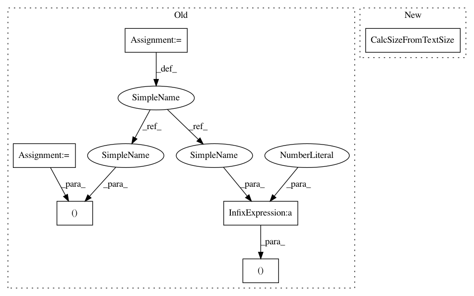

eac24f4f8f25444c3f8036b7b53e54ebee8c29b2,invesalius/data/viewer_slice.py,ContourMIPConfig,__init__,#ContourMIPConfig#Any#Any#,74
Before Change
initial=const.PROJECTION_MIP_SIZE)
self.mip_size_spin.SetValue(const.PROJECTION_MIP_SIZE)
self.mip_size_spin.SetToolTip(wx.ToolTip(_("Number of slices used to compound the visualization.")))
w, h = self.mip_size_spin.GetTextExtent("M")
self.mip_size_spin.SetMinSize((5 * w + 10, -1))
self.mip_size_spin.SetMaxSize((5 * w + 10, -1))
self.border_spin = FS.FloatSpin(self, -1, min_val=0, max_val=10,
increment=0.1,
value=const.PROJECTION_BORDER_SIZE,
digits=1, agwStyle=FS.FS_LEFT)
self.border_spin.SetToolTip(wx.ToolTip(_("Controls the sharpness of the"
" contour. The greater the"
" value, the sharper the"
" contour.")))
w, h = self.border_spin.GetTextExtent("M")
self.border_spin.SetMinSize((5 * w + 10, -1))
self.border_spin.SetMaxSize((5 * w + 10, -1))
self.inverted = wx.CheckBox(self, -1, _("Inverted order"))
After Change
" contour. The greater the"
" value, the sharper the"
" contour.")))
self.border_spin.CalcSizeFromTextSize()
// w, h = self.border_spin.GetTextExtent("M")
// self.border_spin.SetMinSize((5 * w + 10, -1))
// self.border_spin.SetMaxSize((5 * w + 10, -1))
In pattern: SUPERPATTERN
Frequency: 3
Non-data size: 6
Instances
Project Name: invesalius/invesalius3
Commit Name: eac24f4f8f25444c3f8036b7b53e54ebee8c29b2
Time: 2019-04-16
Author: totonixsame@gmail.com
File Name: invesalius/data/viewer_slice.py
Class Name: ContourMIPConfig
Method Name: __init__
Project Name: invesalius/invesalius3
Commit Name: eac24f4f8f25444c3f8036b7b53e54ebee8c29b2
Time: 2019-04-16
Author: totonixsame@gmail.com
File Name: invesalius/gui/task_slice.py
Class Name: EditionTools
Method Name: __init__
Project Name: invesalius/invesalius3
Commit Name: eac24f4f8f25444c3f8036b7b53e54ebee8c29b2
Time: 2019-04-16
Author: totonixsame@gmail.com
File Name: invesalius/data/viewer_slice.py
Class Name: ContourMIPConfig
Method Name: __init__
Project Name: invesalius/invesalius3
Commit Name: eac24f4f8f25444c3f8036b7b53e54ebee8c29b2
Time: 2019-04-16
Author: totonixsame@gmail.com
File Name: invesalius/gui/task_slice.py
Class Name: WatershedTool
Method Name: __init__